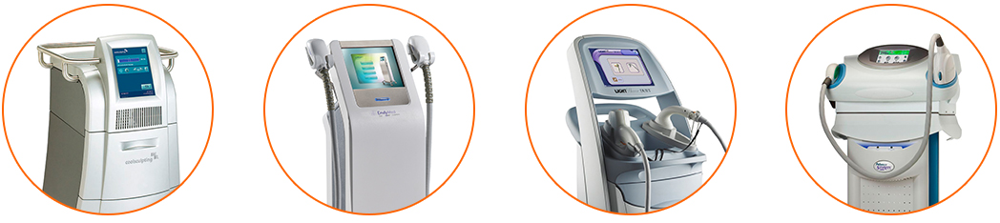

A Sarahil Transporte é uma empresa que foi criada pelo sócio fundador (David Wallace) no intuito de atender a grande demanda de transporte de aparelhos estéticos no Brasil.
O Empresário David Wallace começou a trabalhar com transporte de equipamentos de Laser, Rádio Frequência e de cirurgia Plástica (Lipoaspiração à Laser) em meados de 2006 como motorista e instalador técnico para uma empresa na Vila Mariana que importava, vendia, locava e fazia manutenção preventiva e corretiva no que havia de melhor em equipamentos de Laser, Rádio Frequência e de cirurgia Plástica.
A SARAHIL é a melhor opção em Transporte de equipamentos, médico, voltados para saúde e beleza da pele.
Separamos abaixo fotos de alguns equipamentos que transportamos:
